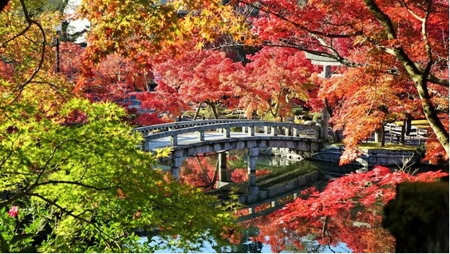
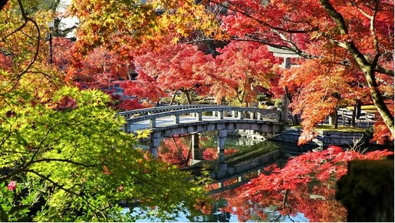
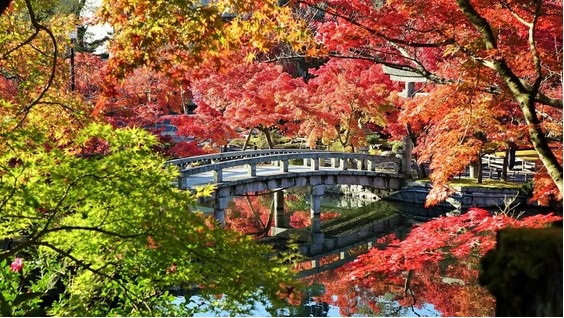

Japão
" Japão um país localizadas no leste da Ásia com sua população em torno de 127,4 Milhões de pessoas, e ocupando uma área territorial de 372.000Km² "
 

" Japão um país localizadas no leste da Ásia com sua população em torno de 127,4 Milhões de pessoas, e ocupando uma área territorial de 372.000Km² "
